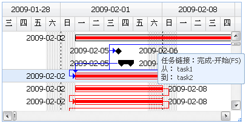

EdoGantt官方提供了一套甘特图界面皮肤，很多情况下，用户想将EdoGantt的显示外观，修改成自己需要的。
EdoGantt的外观自定义，有如下三个方面：
基于EdoGantt的ganttItem结构和样式，通过修改样式的边框线、背景图片和背景色，达到修改外观的目的。
如下所示，通过样式类修改：
<style type="text/css"> /*ganttitem样式*/ .e-gantt-item { background:none; border:solid 1px black; } /*关键任务ganttitem样式*/ .e-gantt-critical .e-gantt-item { background:none; border:solid 1px red; } /*完成百分比横条样式*/ .e-gantt-percentcomplete { background-color:red; } </style>
比如，默认的EdoGantt显示的时候，条形图右侧会有一个任务名显示，我们可以将这个去掉；我们也可以增加新的条形图周边显示元素，达到仿P6左右侧都是日期显示的效果，代码如下：
gantt.set({ taskNameVisible: false, //隐藏taskname itemRenderer: function(task, left, top, w, h, gantt){ //显示一前一后两个日期, 仿P6界面 var startHTML = '<div style="left:'+(left-80)+'px;top:3px;width:100px;height:18px;position:absolute;">' + task.Start.format('Y-m-d')+'</div>'; var finishHTML = '<div style="left:'+(left+w+10)+'px;top:3px;width:100px;height:18px;position:absolute;">' + task.Finish.format('Y-m-d')+'</div>'; return startHTML + finishHTML; } });
尤其是“增加新的显示元素”方式，在itemRenderer方法中，可以根据一些特定的任务属性，显示更多丰富内容，比如对于里程碑任务，我们可以通过itemRenderer方法，在条形图左上角放置一面红色小旗，诸如此类。
EdoGantt有很多提示框效果，当鼠标移上，或进行某些操作的时候，提供更多丰富的信息帮助用户更好的操作。
参考如下代码和注释，可以了解有哪些tips场景和激发的时机：
//鼠标移动到ganttitem上提示:有两种情况,一种是普通的任务条形图,一种是比较基准条形图,通过isTrack区分 gantt.taskTipRenderer = function(task, gantt, isTrack){ //是否移动到"比较基准"下方的条形图上 if(isTrack){ //获得任务的当前比较基准数据 var bl = task.Baseline ? task.Baseline[gantt.baselineIndex] : null; return task.Name+"<br/>比较基准开始日期:"+bl.Start.format('Y-m-d')+"<br />比较基准完成日期:"+bl.Finish.format('Y-m-d'); }else{ return task.Name+"<br/>开始日期:"+task.Start.format('Y-m-d')+"<br />完成日期:"+task.Finish.format('Y-m-d'); } } //鼠标移动到箭头连线上提示 gantt.predecessorLinkTipRenderer = function(task, gantt){ return task.Name; } gantt.predecessorLinkTipRenderer = function(task, link, gantt, e){ preTask = gantt.data.getTask(link.PredecessorUID); var html = '<div>相关性类型：'+Edo.data.DataGantt.PredecessorLinkType[link.Type].Name+'</div><div>从： '+preTask.Name+'</div><div>到： '+task.Name+'</div>'; return html; } //拖拽整个ganttitem时提示 gantt.itemDragTipRenderer= function(e){ return '<b>开始日期:</b>'+e.Start.format('Y-m-d')+'<br/><b>截止日期:</b>'+e.Finish.format('Y-m-d'); } gantt.percentCompleteDragTipRenderer= function(e){ return '<b>完成百分比:</b>'+e.PercentComplete + '%'; } gantt.startDragTipRenderer= function(e){ return '<b>开始日期:</b>'+e.Start.format('Y-m-d'); } gantt.finishDragTipRenderer= function(e){ return '<b>完成日期:</b>'+e.Finish.format('Y-m-d'); } //竖向滚动条提示 gantt.verticalScrollTipRenderer= function(r, gantt, e){ return '<div style="width:150px;overflow:hidden;white-space:nowrap;">当前任务：'+r.Name+'</div>'; } //横向滚动条提示 gantt.horizontalScrollTipRenderer= function(date, gantt, e){ return '<div style="width:115px;overflow:hidden;">当前日期:'+date.format('Y-m-d')+'</div>'; }
自定义后的EdoGantt效果图如下：

以上介绍了Edo.lists.Gantt组件的外观自定义，作为一个标准甘特图，还有一个Edo.lists.Tree任务树需要自定义。
有关于Edo.lists.Tree的更多信息，请访问EdoJS官方网站查看。